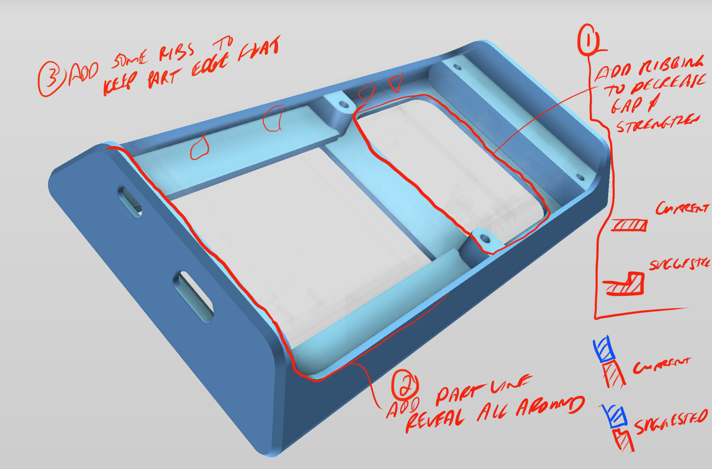
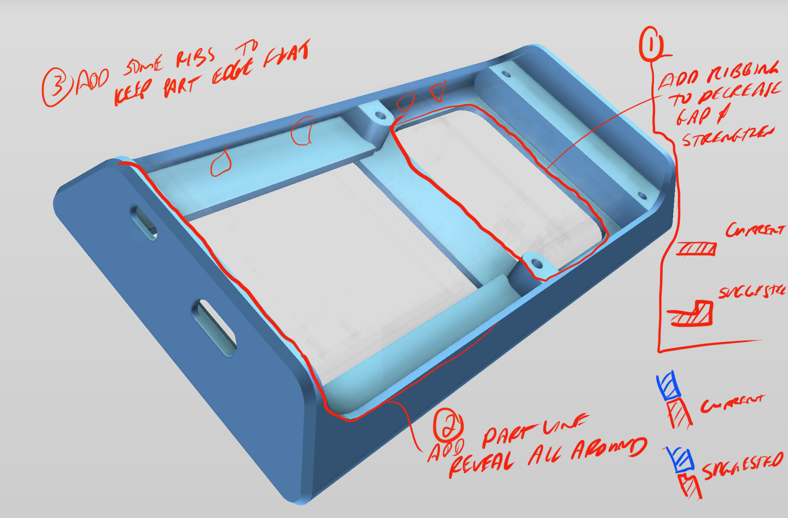

Unlike many modern languages, Japanese does not utilize an adaptation that uses the English alphabet. As a result, typing in the language on the standardized QWERTY keyboard has proven to be a struggle. The most popular approach has been to use a keyboard cover to remap the keys to Japanese counterparts. This is not only cumbersome but also completely unintuitive to the language of Japanese. Flick aims to solve this issue by simulating a more natural experience - one that uses strokes and haptic feedback to feel much more like the handwritten language.
.png)
Completed during my time working at Facture Product Development, Flick is an early stage prototype aimed towards investors to further build the idea. As a result, it operates as a standalone unit with its own screen rather than being tethered to a laptop. It features a 2 axis sliding button pad with six buttons on top. Keystrokes are obtained by utilizing a combination of the button (or buttons) that are held down and the direction the keypad is flicked. The device has a one hour battery life and has several modes of operation including writing, numbers, and TV/Alexa remote highlighting the plethora of possibilities that the device could fulfill. The design, development, and engineering of Flick was a major stepping-stone for me into the field of product design due to the unique challenges it presented to me.
At the start of any product’s design is a no-questions-asked all-out brainstorming session. In this we discussed everything from the user experience to the look and feel of the product to the detailed components to be used to execute the movement. This lead to our first big design questions:
Keeping these three questions in mind, we began our journey into Flick beginning with architecture exploration. Many important decisions had to be made. Capacitve touch or mechanical switches? A laptop trackpoint or a joystick? A microcontroller or a wired device? What microcontroller fits our specifications? Which screen do we want? How big will this be? How could this be used to convey further utility? All of these questions and more were splayed out for our team to see as we began prototyping.
To start exploring some of these big questions about architecture, we first constructed a bare-bones prototype in order to gauge challenges and feasibility. Though this prototype was crudely assembled with sloppy parts, it was very important. It provided great insight into a solution that worked with the simplest and most direct path forward and exposed issues that would need to be solved in the future iterations.
As we continued to test this prototype and further develop the firmware, we noticed several very important mechanical issues. First, though the joystick we prototyped with was good for X and Y translation, it did not deal well with twisting, resulting in very noticeable wobbling when flicking, especially prominent in using the edge of the button pad. Additionally, we realized the many challenges that would need to be eventually overcome in firmware. There Lastly, the physical size of the system was simply too bulky for a handheld device in its current form. With this empirical knowledge, we were able to trudge forward with some clear goals of what to work on.
.jpg) 

Goals
Summary
Hardware Overview

The device has two main PCBs. The main motherboard PCB houses the 1.8” TFT screen on the front and the Feather M0 and the FFC (flexible flat cable) connector on the back. A FFC runs between the motherboard PCB and the button pad PCB. The button pad PCB houses the buttons on one side and joystick on the back. A 100 mAh battery powers the device for about an hour, can be charged via the Feather’s micro USB port, and has a toggle On/Off switch.
Mechanical System
Device consists of two major mechanical assemblies:
Keypad Overview
Keypad assembly consists of two sliding axes with the following features:
A special thanks to Justin Knowles, Alex Anderson, Sean Dever, and Tim Christman and the rest of the team at Facture who collaborated with me to bring this into a finished product.